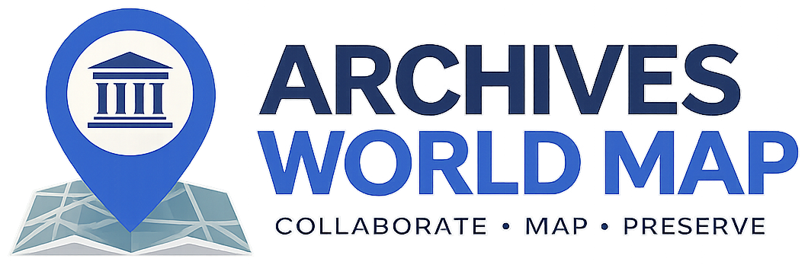

Rio de Janeiro, Brasil · registro verificado · dados institucionais suficientes para referência pública.
Ver fichaReportar correção
A nova interface mantém o AWM como camada ISDIAH: localizar instituições, qualificar dados, favorecer colaboração e abrir caminho para exploração de acervos no ArchivAI quando houver metadados disponíveis.

Rio de Janeiro, Brasil · registro verificado · dados institucionais suficientes para referência pública.